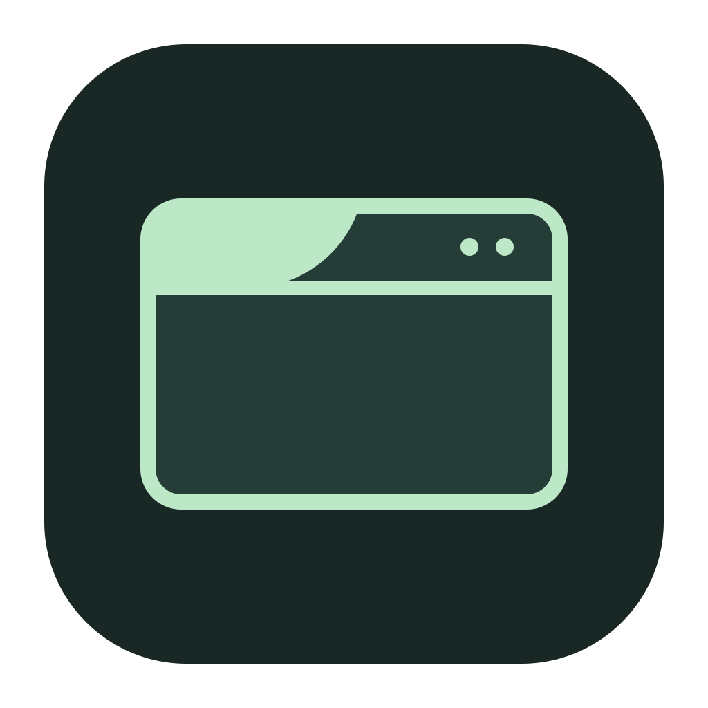

Menu Veil
Hide the left side of your menu bar.
The Apple icon and app menus stay out of the way.
Your status icons stay where they are.
When you need the menus
Hover to revealA short fade brings them back.
Switch appsThe cover fits automatically.